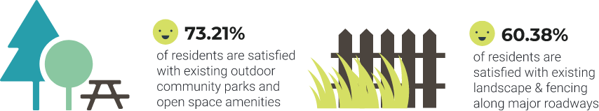
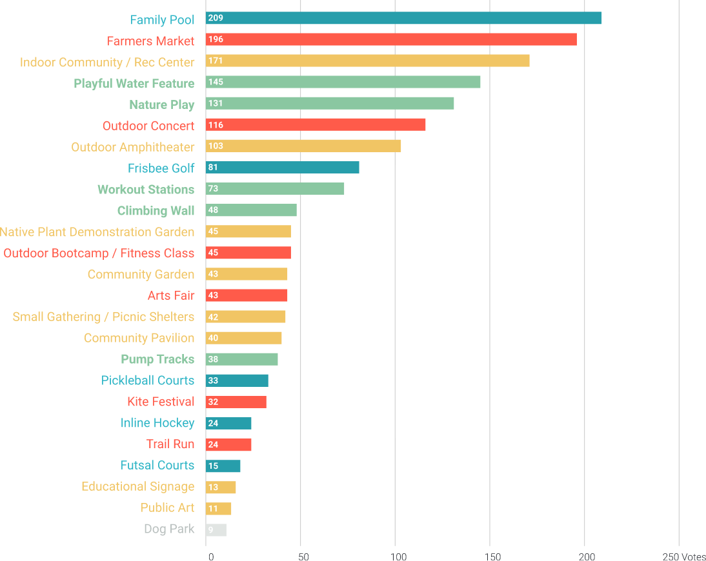
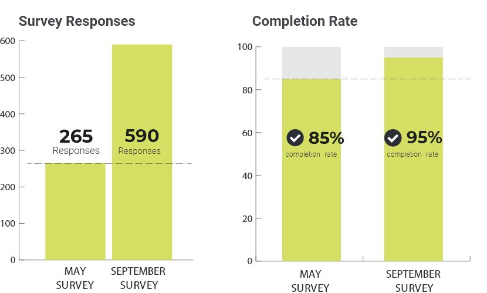
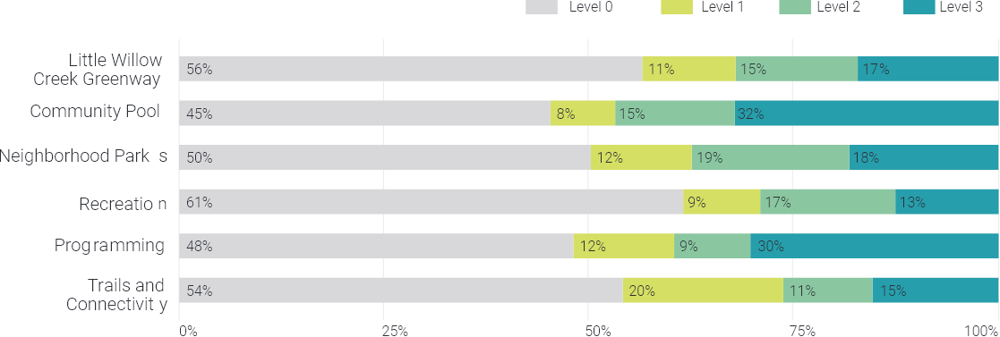
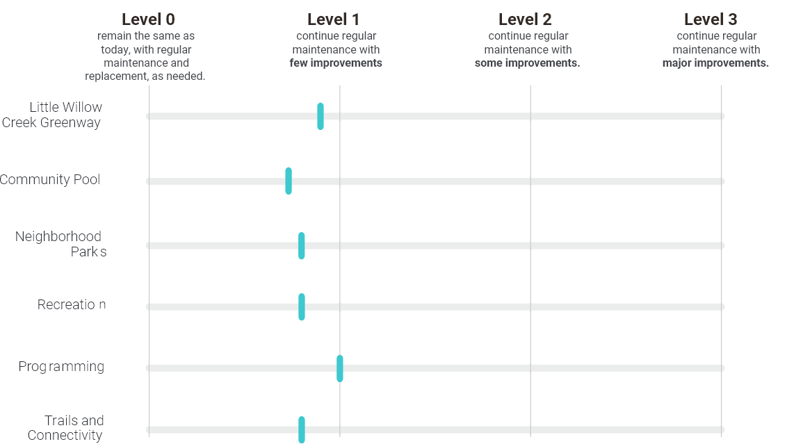
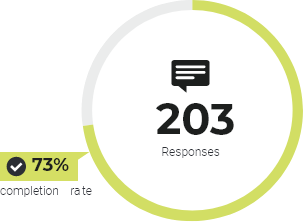
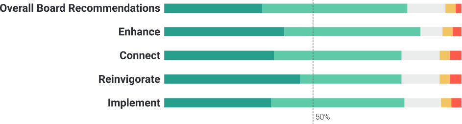
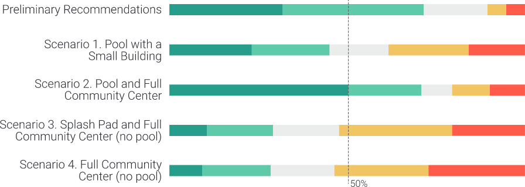

Introduction
Master Plan Process & Public Involvement
Engagement Process
The Master Plan Update Process occurred over an 8-10 month timeframe and included four phases of activity: Analysis, Concepts, Draft Master Plan and Final Master Plan. The engagement process included three community events, three online surveys and regular coordination with the RVMD Board. The first public meeting was hosted at Community Park, and the second and third public meetings were hosted at Roxborough Elementary School.
Our Approach
The planning team reached out to the community through three public meeting events, paired with online surveys to allow community members who could not attend to give feedback. In addition to traditional in-person public meetings and online surveys, each community event featured an innovative outreach that is specifically designed for each stage of the planning process, and provided residents an appropriate platform to give feedback that would guide the planning recommendations to best serve community residents’ needs and desires.
Open Space Walk and Talk

The first public meeting featured an Open Space Walk and Talk. The Open Space Walk and Talk offered a way for the community members to share ‘in the field’ information with each other and the planning team. A member from the planning team led a group of community members on a short stroll around Roxborough Community Park. Through informal conversations and occasional stopping points, community members shared important feedback on what is working and not working in the open space system.
Interactive Game
The second public meeting asked residents to play an interactive game for planners to get feedback on what kind of amenities in which residents want to invest.

Residents received a ‘wallet’ of RoxBucks, and visited six stations to select their preferences. Each station offered options for various community amenities, funding, and improvements, or the option to withhold funding to keep parks the way they are today.
The stations included:
- Little Willow Creek Greenway
- Community Pool
- Neighborhood Parks
- Recreation
- Programming
- Trails and Connectivity
Virtual Reality Tour
The third public meeting introduced preliminary detailed recommendations for each of the following categories: trails & connectivity, open space, neighborhood parks, programming, recreation, and potential community center and/or pool locations and scenarios.

To demonstrate potential concept design for neighborhood parks, virtual options featured were play equipments for different age groups, nature play, shade structure, grills, and seating areas. The planning team set up a station to allow community members to tour the future park in virtual reality. Virtual reality model allows community members to have a better understanding of what potential neighborhood parks could look and feel like, and experience the park in real-time before its built.
Check out 3D Tour in Your BrowserCommunity Meeting Feedback Summary
Community Meeting 1 | May 18, 2019

The May kickoff event at the Community Park focused on listening and gathering some initial community input. Residents were asked to provide input on their favorite and least favorite outdoor amenities and open space locations, and to share ideas for new amenities, activities and events. For those not able to attend, an online survey was made available.
Survey Summary
It was clear that residents of the community love their trails, open space, natural beauty, and access to nature, but some believed a few things were lacking. Input received from the first community meeting and the online survey revealed that 60% to 70% of respondents are satisfied with the parks, open spaces, and streets.
It was evident that a vast majority of respondents regularly use the trails along Little Willow Creek and the adjacent parks.
The 265 respondents expressed a strong desire for a pool or community center, water features, nature playgrounds, and new programs, including a farmer’s market, and concerts in an outdoor amphitheater.
Respondents also expressed interest in additional shade structures and a variety of play features for all ages. The general theme was interest in programming and amenities that encourage social gatherings, such as concerts, markets, and a potential pool.
Future Open Space Amenities, Facilities, and Programming
We asked what new amenities the community desires and below is a compiled list based on their votes.
Although people use the District’s open space regularly, there is a clear desire for a central community hub in the form of a community pool, recreation center, indoor community center. The community is more interested in programming and amenities that encourage social gathering, such as a farmer’s market and outdoor concerts.
View May Survey SummaryCommunity Meeting 2 | September 5, 2019

The District hosted a second community meeting to get input. Residents’ input from the first community meeting, as well as survey results, indicated the community’s interest in a pool, improved playgrounds, enhanced open spaces, and new programs such as a potential farmer’s market or community concerts.
The September community meeting featured an interactive exercise where residents were asked to select their preferences for community open space amenities. As part of the exercise, residents were asked to decide if they wanted to invest in a new community pool, neighborhood parks, trail connections, open spaces, and additional community events like the Fall Festival. Turnout and feedback was fantastic and the second community survey received 590 responses, which was a 100% increase from the first survey.
Percentage of Selection for Each Topic
Average Selection for Each Topic
After calculating the average funding allocation to each topic (by finding the total sum of each topic and divide by total number of respondents), the community desires a degree of change that is slightly less than level 1 for all categories. General definition of level of changes below. Improvements vary by topic, refer to survey for more details.
 View September Survey SummaryCommunity Meeting 3 | November 7, 2019

The District hosted the final community meeting in November. The meeting included results and summaries from the first and second community surveys, draft recommendations for trail & connectivity, open space, neighborhood parks, programming, recreation, and community center and/or pool locations and scenarios.
The community residents were asked to rank their level of agreement regarding each recommendation, such as providing trail connection to Chatfield State Park, adding play equipment for various age groups in neighborhood parks, and potential future community center and/or pool locations, so the District Board could better gauge the community’s interests.
The third community survey received 203 responses, and offered detailed glimpses into the respondents’ desire regarding master plan recommendations.
Average Selection for Each Topic
More than 75% of respondents agree with goals & objectives recommendations, and show strong support to enhance, connect, reinvigorate, and implement the District assets.
Community Center and/or Pool Potential sites
Respondents generally agree with preliminary recommendations and both site options. However, there is a stronger disagreement towards placing the pool at Potential Site 2) Open Space South of Safeway.

Community Center and/or Pool Scenarios
More than half of the respondents strongly agree or agree with preliminary recommendations for Community Center and Pool Scenarios, and agree that an additional feasibility study should be completed to determine the preferred size, programming, and site.
In general, respondents supported the scenarios that included a pool over those without a pool. Scenario 2, which provided a pool and full community center, received the greatest support.
 View November Survey Summary